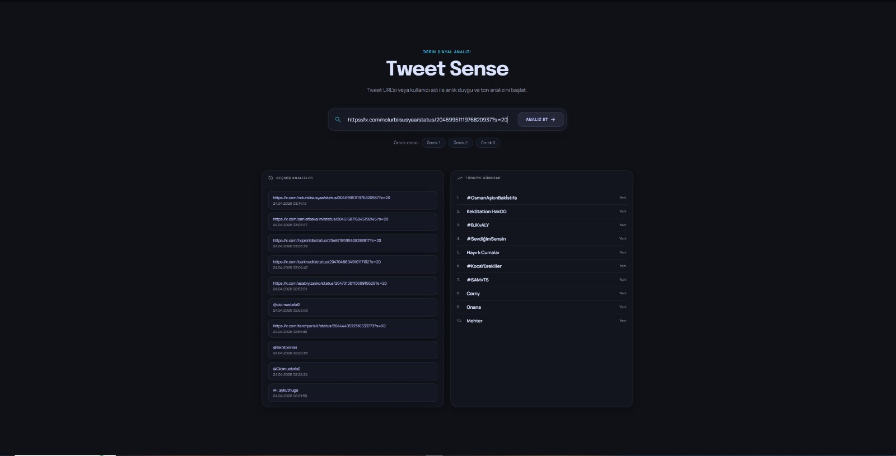
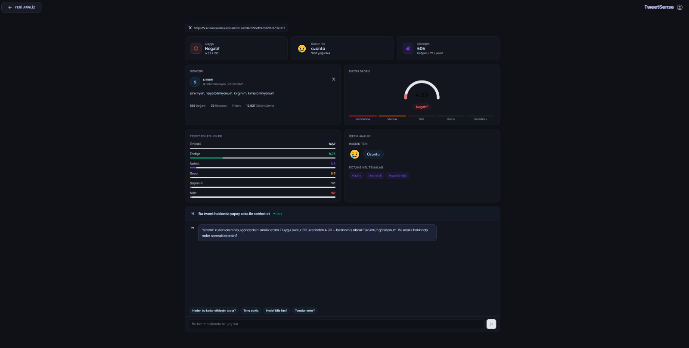

TweetSense
Twitter/X verilerini kazıyan, yerel BERT modeliyle duygu analizi yapan ve Gemini AI destekli sohbet arayüzü sunan tam kapsamlı bir sosyal sinyal analiz platformu.

Klasör Yapısı
Proje, standart bir Frontend + Backend mimarisiyle ayrılmıştır. Backend Python, Frontend React/TypeScript kullanır.
├── api.py ← FastAPI — tüm endpoint'lerin koordinatörü
├── tweet_parser.py ← Twitter GQL kazıma motoru
├── emotion_classifier.py ← Yerel BERT modeli (hızlı, ücretsiz)
├── llm_chat.py ← Gemini API (SADECE /api/chat'te)
├── .env ← AUTH_TOKEN, CT0, BEARER, GEMINI_API_KEY
├── requirements.txt
├── models/emotion_classifier/ ← İndirilmiş model dosyaları
└── src/
├── App.tsx ← Yönlendirme ve ana mantık
├── index.css ← Glassmorphism / Neon Arena tema
└── pages/
├── InputPage.tsx ← Arama + Gündem
├── ResultPage.tsx ← Analiz + AI Sohbet
└── ProfilePage.tsx ← Kullanıcı analizi
api.py — Backend Orkestratörü
FastAPI üzerine kurulu ana sunucu dosyasıdır. Tüm HTTP endpoint'lerini tanımlar; diğer modülleri (tweet_parser, emotion_classifier, llm_chat) çağırarak koordine eder.
Endpoint'ler
@app.post("/api/analyze") async def analyze_text(payload: dict = Body(...)): """Metni yerel AI modeli ile analiz eder.""" text = payload.get("text") if not text: raise HTTPException(status_code=400, detail="Metin zorunludur.") classifier = get_classifier() # singleton — model bir kez yüklenir analysis = classifier.predict(text) return {"ok": True, "data": analysis}
⚠️ Önemli: get_classifier() bir singleton döner — BERT modeli uygulama başlarken yalnızca bir kez RAM'e yüklenir, her istekte tekrar yüklenmez.
tweet_parser.py — GQL Kazıma Motoru
Twitter'ın resmi API'si yerine, tarayıcı gibi davranarak Twitter'ın iç GraphQL endpoint'lerine doğrudan istek atar. Resmi API kısıtlamalarını tamamen bypass eder.
.env dosyasındaki AUTH_TOKEN, CT0 ve BEARER değerleri header'lara eklenir. curl_cffi kütüphanesi Chrome'u taklit ederek bot tespitini aşar.
TweetDetail — tek tweet çekme. UserTweets — kullanıcının son N tweeti. Retweet'ler filtrelenerek yalnızca orijinal içerik alınır.
fetch_tweet_from_url() Akışı
def fetch_tweet_from_url(url: str) -> TweetData: # 1. URL'den tweet ID'sini regex ile çıkar tweet_id = extract_tweet_id(url) # /status/(\d+) # 2. .env kimlik bilgilerini oku auth_token, ct0, bearer = _get_credentials() # 3. Chrome131'i taklit eden oturum oluştur session = _build_session(ct0, bearer, auth_token) # 4. GQL isteği → JSON yanıtını ayrıştır → TweetData döndür return fetch_tweet(tweet_id)
TweetData bir Python dataclass'ıdır: tweet_id, text, author, handle, created_at, likes, retweets, replies, views, is_note_tweet alanlarını içerir. Not tweet (uzun format) varsa full_text yerine o tercih edilir.

emotion_classifier.py — Yerel BERT Modeli
İnternet bağlantısı veya API ücreti gerektirmeyen, tamamen yerel çalışan duygu sınıflandırma motorudur. models/emotion_classifier/ klasöründeki fine-tuned BERT modelini yükler.
happiness, love, fun, relief, enthusiasm, surprise
worry, sadness, hate, anger, boredom, empty
0–100 Skor Hesaplama Mantığı
# Softmax → her duygu için 0-1 arası olasılık probs = torch.nn.functional.softmax(outputs.logits, dim=-1) # Pozitif ve negatif grupların toplam olasılıkları pos_prob = sum([emotions_map[e] for e in POSITIVE if e in emotions_map]) neg_prob = sum([emotions_map[e] for e in NEGATIVE if e in emotions_map]) # Başlangıç: 50 (nötr). Pozitifler artırır, negatifler düşürür. score = 50 + (pos_prob * 50) - (neg_prob * 50) # Etiket: ≥60 → Pozitif | ≤40 → Negatif | arası → Nötr
Sonuç olarak frontend'e şu nesne döner: score (0-100), label ("Pozitif"/"Negatif"/"Nötr"), top_emotion (Türkçe baskın duygu), emotions (tüm duygular sıralı liste).
llm_chat.py — Gemini Entegrasyonu
Gemini API yalnızca /api/chat endpoint'inde çağrılır. Trend analizi, profil analizi ve tweet analizi tamamen yerel BERT modeli ile yapılır — token harcanmaz.
SYSTEM_PROMPT = """ Sen bir tweet analiz asistanısın. - Yazar: {author} - Metin: {text} - Duygu: {score}/100 ({label}) - Baskın Hisler: {emotions} Kısa, samimi, robotik olmayan Türkçe yanıtlar ver. """ def get_chat_response(messages: list, tweet_context: dict) -> str: # Bağlamı sistem promptuna yerleştir prompt = SYSTEM_PROMPT.format(**tweet_context_fields) # Gemini 2.0 Flash modeli — sistem talimatı ile başlat model = get_gemini_model(system_instruction=prompt) # Yalnızca son kullanıcı mesajını gönder last_message = messages[-1]["content"] return model.generate_content(last_message).text
Model olarak gemini-2.0-flash kullanılır. Sistem promptu tweet bağlamını (yazar, metin, duygu skoru, baskın hisler) içerir; bu sayede model tweet'e özel, bağlamlı yanıtlar üretir.
Trend Scraping — trends24.in
Twitter resmi bir "Trends API" sunmadığından, Türkiye gündem verileri üçüncü taraf trends24.in sitesinden kazınır. Yine curl_cffi ile Chrome taklidi yapılır.
from curl_cffi import requests import re response = requests.get("https://trends24.in/turkey/", impersonate="chrome") html = response.content.decode("utf-8", errors="ignore") # Trend adı ve tweet sayısını HTML'den çıkar trends = re.findall( r'<a[^>]*>([^<]+)</a>\s*(?:<span class="tweet-count">([^<]+)</span>)?', html ) # İlk 10 geçerli trend — "home", "world" gibi nav linkleri atlanır
Trend verileri: name (trend adı) ve volume (tweet sayısı veya "Yeni") alanlarından oluşur. Maksimum 10 trend döndürülür.
Frontend — React Sayfaları
React + TypeScript ile geliştirilmiş arayüz, Neon Arena tasarım sistemini kullanır: saf siyah arka plan, glassmorphism bileşenler, neon aksan renkleri.
Kullanıcıyı karşılayan giriş ekranı. X Türkiye gündemini anlık gösterir, tweet URL veya kullanıcı adı ile arama yapılır.
Duygu skorları, pasta grafikler ve Gemini AI sohbet kutusunun bulunduğu detaylı analiz ekranı.
Kullanıcının son tweetlerini analiz ederek duygu profili ve en çok kullandığı kelimeyi gösterir.
CSS değişkenleri ve glassmorphism sınıfları ile tutarlı koyu tema. Tüm bileşenler bu dosyadan stil alır.
Model Eğitimi — Google Colab
Model, cardiffnlp/twitter-xlm-roberta-base üzerine fine-tune edilmiştir. Eğitim Google Colab'da yapılmış, tamamlanan model Google Drive'a kaydedilmiştir.
cardiffnlp/twitter-xlm-roberta-base — Twitter verisiyle önceden eğitilmiş çok dilli RoBERTa
3 epoch · lr=2e-5 · batch=16 · weight_decay=0.01 · en iyi model yüklenir
1. Veri Hazırlama — Dengeleme
CSV'deki sınıf dengesizliğini gidermek için her duygu sınıfı, en kalabalık sınıfın yarısı kadar örneklenmiştir (oversample).
from sklearn.model_selection import train_test_split df = pd.read_csv(DATASET_PATH) df = df.dropna(subset=['cleaned_content', 'sentiment']) # Her sınıfı max_count // 2 kadar örnekle (oversample) max_count = df['sentiment'].value_counts().max() balanced_dfs = [] for sentiment, group in df.groupby('sentiment'): target = max_count // 2 if max_count // 2 > len(group) else len(group) balanced_dfs.append(group.sample(target, replace=True, random_state=42)) df_balanced = pd.concat(balanced_dfs).sample(frac=1).reset_index(drop=True) # %80 eğitim, %20 doğrulama train_texts, val_texts, train_labels, val_labels = train_test_split( df_balanced['cleaned_content'].tolist(), df_balanced['label'].tolist(), test_size=0.2, random_state=42 )
2. Dataset Sınıfı ve Tokenizer
tokenizer = AutoTokenizer.from_pretrained("cardiffnlp/twitter-xlm-roberta-base") class TweetDataset(torch.utils.data.Dataset): def __init__(self, encodings, labels): self.encodings = encodings self.labels = labels def __getitem__(self, idx): item = {key: torch.tensor(val[idx]) for key, val in self.encodings.items()} item['labels'] = torch.tensor(self.labels[idx]) return item def __len__(self): return len(self.labels) # max_length=128 — Twitter tweetleri için yeterli train_enc = tokenizer(train_texts, truncation=True, padding=True, max_length=128) val_enc = tokenizer(val_texts, truncation=True, padding=True, max_length=128)
3. Eğitim ve Kaydetme
training_args = TrainingArguments( output_dir=OUTPUT_DIR, learning_rate=2e-5, num_train_epochs=3, per_device_train_batch_size=16, eval_strategy="epoch", save_strategy="epoch", load_best_model_at_end=True, # en iyi checkpoint otomatik yüklenir weight_decay=0.01, ) trainer = Trainer(model=model, args=training_args, train_dataset=train_dataset, eval_dataset=val_dataset) trainer.train() # Model ve tokenizer Google Drive'a kaydedilir trainer.save_model(OUTPUT_DIR) tokenizer.save_pretrained(OUTPUT_DIR)
Inference — Model Kullanımı
Eğitilen modeli yükleyip tek bir tweet üzerinde duygu analizi yapmak için kullanılan test kodudur. emotion_classifier.py içindeki predict() metodunun prototipini oluşturur.
Model Yükleme
MODEL_DIR = '/content/drive/MyDrive/emotion_classifier' tokenizer = AutoTokenizer.from_pretrained(MODEL_DIR) model = AutoModelForSequenceClassification.from_pretrained(MODEL_DIR) device = torch.device("cuda" if torch.cuda.is_available() else "cpu") model.to(device) model.eval() # dropout / batch norm → inference modu
get_sentiment_score() Fonksiyonu
Bu fonksiyon daha sonra emotion_classifier.py'daki EmotionClassifier.predict() metoduna dönüştürülmüştür. Mantık aynıdır.
def get_sentiment_score(text): inputs = tokenizer(text, return_tensors="pt", truncation=True, padding=True, max_length=128) inputs = {k: v.to(device) for k, v in inputs.items()} with torch.no_grad(): # gradyan hesabı yok → hızlı + az bellek probs = torch.nn.functional.softmax( model(**inputs).logits, dim=-1 ).squeeze().tolist() emotions = {model.config.id2label[i]: p for i, p in enumerate(probs)} top_emotion = max(emotions, key=emotions.get) # 0-100 skor: 50 başlangıç + pozitif katkı - negatif katkı pos = sum(emotions[e] for e in POSITIVE if e in emotions) neg = sum(emotions[e] for e in NEGATIVE if e in emotions) score = 50 + (pos * 50) - (neg * 50) return {"score": round(score, 2), "label": label, "top_emotion": top_emotion, "all_emotions": emotions}
Örnek Çıktı
Metin : Bugün hava çok güneşli, dışarı çıkacağım için çok mutluyum. Genel Duygu Skoru : 84.5/100 - Pozitif Baskın Hissiyat : happiness İlk 3 Duygu İhtimali: - happiness : %67 - enthusiasm: %18 - love : %9
Kurulum ve Başlatma
İki ayrı terminal gerekir: biri backend, biri frontend için.
Backend
cd twitter_emotin_analyzer pip install -r requirements.txt uvicorn api:app --reload --port 8000
Frontend
cd twitter_emotin_analyzer
npm install
npm run dev
# → http://localhost:5173
.env Dosyası
AUTH_TOKEN=<twitter_auth_token> CT0=<twitter_csrf_token> BEARER=<twitter_bearer_token> GEMINI_API_KEY=<gemini_api_key> FRONTEND_ORIGIN=http://localhost:5173
Dosya Özeti
| Dosya | Görev | AI Kullanımı |
|---|---|---|
| api.py | Tüm endpoint'lerin koordinatörü, CORS, hata yönetimi | — |
| tweet_parser.py | Twitter GQL ile tweet ve profil verisi çekme | — |
| emotion_classifier.py | Yerel BERT ile 13 duygulu 0-100 skor analizi | 🟢 Yerel |
| llm_chat.py | Tweet bağlamlı sohbet asistanı | 🔵 Gemini API |
| colab_train.py | Veri dengeleme, TweetDataset, Trainer ile fine-tune, Drive'a kayıt | 🟠 Colab GPU |
| colab_inference.py | Eğitilmiş modeli yükleme, get_sentiment_score() prototipi | 🟠 Colab GPU | Glassmorphism tasarım sistemi ve CSS değişkenleri | — |